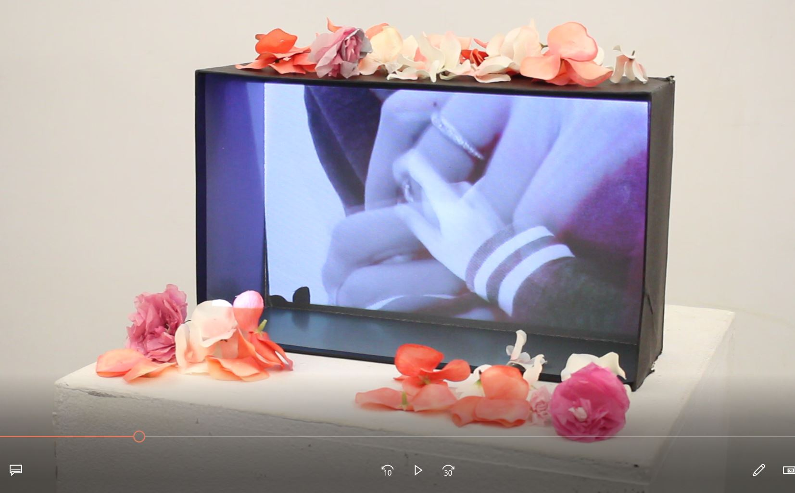

The title of this piece is called "Majestic MJ," which includes the head of Michael Jackson, mechanical wings, and a body of a cyborg horse. I created the Glitch of "Majestic MG" using the effects Invert and Reverse.
My group, with Thomas and Raymond, agreed on "Place Series." The beginning concept of our group was to each pick a city of our choice and find an night scenery image of the city we chose. From there on, we decided to begin individually working on our own chosen images to come up with whatever pops to mind to create our own hyper real twist with reality. I chose a night scenery of Seattle, Washington. I knew before starting I wanted to incorporate a battle scene like image, and I thought about Super Smash Bros Brawl. Therefore, I decided to find some battle scenes/stages and characters from the game to cut, copy and paste onto my night scenery. It was pretty much just a ton of using the Quick Selection Tool, copying and pasting. I did try to enhance the colors of the night scenery image with "Levels" and "Selective Color" which I kind of just found on my own and played around with. The name of my piece is "Seattle Super Smash Brawl."
The concept of my video was to capture outside shots specifically at night, accompanied by the sounds of relaxing noise. My goal was to keep my video as simple as possible, with the intention of it being both visually and auditorily relaxing/pleasing, or maybe even therapeutic. I kept all the shots at night so that it'd be visually easy on the eyes, and I used the sounds of windchimes (from my house), the wind, and water falling to sound pleasant to the ear (or at least I hope it does :p) hehehe
Artist website: https://asukabaka.github.io/WindowsXP/
*** Best used on Firefox browser (for audio) ***
Our Net Art Piece is called Windows Story. The concept of our project is based around the theme of early internet memories. We thus decided to start our piece with an old Windows XP login/startup page that would link to a Maplestory Game Launcher (from the Windows home page). Once the game is "launched," the game continues to tell a story as if one were playing the Maplestory game itself. The concept is quite simple, but hopefully we were able to capture some early memories of the early 2000s!
https://editor.p5js.org/asukabaka/sketches/SsemZeXb5
The title of our piece, "Careful," is to bring light about the invasion and loss of privacy on the internet. The combination of title "Careful" and the text BIG BROTHER IS ALWAYS WATCHING" serves as a warning to the audience. The art piece involves interaction through the user's mouse. One would move their mouse across the screen to experience the glitching search engine homepage. Each glitch represents a search engine corporation collecting information about you. When you click down on the mouse button the background transitions into a hostile red with Big Brother from Orwell's 1984 stating that you are always being watched.
My video is called "beauty" and is to bring awareness of the contradictions social media provides regarding our physical appearances. I wanted to display how social media dictates that our imperfections are to be covered, and are hideous to look at. Once those are covered, society deems us as beautiful, pretty, and perfect. However, once they find out the reality of your imperfections, that mask you wear to be deemed perfect is no longer seen as beautiful, but rather a lie to society. I wanted to display vulnerability of imperfections and that regardless of how we look, with or without a mask, we are never less or more than one another. We are all equally beautiful.
Video Installation
*** The video file was too large to upload on GitHub, therefore for now I can only provide an image of my installation! ***
Video Projected
My video is called “anxiety” and is a depiction of what moments of anxiousness looks and feels like. My installation is a projection mapping of my video into the inside of a box. The box is to symbolize the encapsulating and trapped like feeling when one struggles with anxiety. It represents the sense of feeling like no matter where you go, you find yourself constantly getting stuck into a corner and the whole world is somehow judging you. The box is a greyish black in the inside for the intention of symbolizing the struggle of these internal “demons” and “darkness.” I wanted to keep the space quite simple by just having the box on a high platform to project my video into. I kept it minimalistic from the outside pov, by just sprinkling “happy” looking flowers on the outside of the box, because anxiety is something that looks normal, small, and mediocre to those who perceive it, but feels internally intense for those who feel it (which I hope my video captures).
Artist Website: https://vanessaR098.github.io/consuMEDIA
My interactive website is called "ConsuMEDIA". I wanted to create a website that would capture the toxicity of social media, hence the title ConsuMEDIA, aka consume media. The user will continue following the "like" button until they feel "satisfication." Once finished, they cilck the screen which bursts into a picture that represents how we have become slaves to social media which then asks "Are you satisifed yet?". Because it seems, even with all the number of likes, number of follows, and number of friends we recieve through social media, we never truly feel at ease nor content with ourselves.
Artist Website: https://vanessar098.github.io/ICantHelpIt/
*** Best used on Firefox browser (for audio) ***
This artwork was a theme continuation from my Video as Installation, "anxiety." I wanted to continue with the theme of anxiousness and feelings of unease and hope to get my users to experience what that feeling looks and feels like to those wo struggle with it. However, I wanted to see if I could accomplish this same feeling through a website rather than a video. How can I code something that will resonate the feeling of anxiousness?
In my website, the background of static is to act as a representation of confusion and displeasure. Almost as how someone would feel when static comes on the T.V. and have this reaction of fear and irritation. I continued to build that emotion with a user interaction trying to wipe away the never ending ellipses. As the user interacts, there's a story in the background being told from the perspective of one fighting against their own feelings and thoughts. The user's never ending act of wiping away something that never ends acts as correlation betweem how mental instability feels like, when you feel trapped in your own mind of an endless race with yourself and your conscience. At the end of the story/conversation, there's a link that opens and bursts to a page where the screen/window gradually fills red, to represent the feeling of being completely drowned and emersed at the end of the race.